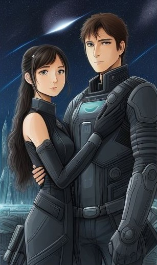

In the bustling city of Darwin, where the shimmering waters of the Timor Sea kissed the shoreline, Nathan found himself
navigating the unpredictable seas of online dating in the year 2020. Among the digital profiles and pixelated
conversations, one name stood out like a beacon of hope – Alice.
Nathan, a man with a heart that craved connection, had spent countless nights swiping left and right in search of
someone who would ignite that long-lost spark within him. And then, there she was, Alice, her profile a tapestry of
vibrant interests and a smile that could melt even the most cynical of hearts.
Their online exchanges were like a symphony of words, gradually building a beautiful melody. They shared stories of
their past, dreams of their future, and discovered a shared love for music that resonated like a chord striking true. It
was a connection that went beyond the virtual realm.
As December approached, a daring idea took root in Nathan's mind. He decided to extend an invitation that would change
the course of their budding connection. Nathan, a talented cook and a passionate guitarist, proposed a first date that
was as unconventional as it was heartfelt – a Christmas Day rendezvous at his apartment.
Amid the warm, tropical Christmas air of Darwin, Nathan welcomed Alice into his home. The apartment, adorned with
twinkling fairy lights and the sweet aroma of roast lunch wafting from the kitchen, felt like a holiday haven. Nathan
had poured his heart into preparing the feast, a tangible expression of his feelings for Alice.
With a shy smile and a twinkle in his eyes, Nathan served up the sumptuous roast, hoping it would be the start of many
shared meals and shared moments. As they savored the flavors of the meal, their laughter danced like Christmas ornaments
hanging from a tree.
After the plates were cleared and the wine glasses refilled, Nathan picked up his guitar. He strummed the strings
gently, the chords echoing the feelings that had grown between them. With every note, their connection deepened, the
music becoming a silent whisper of what words alone could not express.
In the heart of Darwin, on a day when the world celebrated love and togetherness, Nathan and Alice discovered that their
meeting through a dating app had turned into something extraordinary. The music, the laughter, and the joy they shared
on that Christmas Day were the first chords of a song that would resonate in their hearts for years to come.
As January rolled in with its warm tropical breezes, Nathan and Alice's connection deepened with every passing day.
Their initial Christmas rendezvous had set the tone for a blossoming relationship that was both passionate and genuine.
Their favorite meeting spot quickly became the Esplanade, a picturesque waterfront promenade where the sun kissed the
sea and the salty breeze filled the air. Here, they would lace up their running shoes and embark on refreshing jogs
along the shoreline. The rhythm of their steps was mirrored by the rhythm of their conversations, as they shared their
dreams, their daily triumphs and challenges, and the intricacies of their previous life experiences.
Alice, a city girl through and through, listened with fascination as Nathan recounted his adventures growing up in the
rugged Outback of Australia. She admired his resilience and the wisdom he had gained from his unique upbringing. In
turn, Nathan marveled at Alice's passion for her work in marine conservation, her love for art, and the way her eyes
sparkled when she talked about the places she wished to explore.
In mid-January, Nathan decided it was time for their first activity date. He wanted to surprise Alice with an outing
that would be both fun and memorable. Thus, they found themselves at Kingpin Bowling, a vibrant and lively bowling alley
in the heart of Darwin.
Alice's excitement was palpable as they entered the brightly lit venue. She confessed that it was only her second time
bowling in her entire life, and her nerves were tingling. Nathan, ever the gentleman, assured her that they were there
to have fun, not to keep score.
As the first game got underway, Alice surprised herself by bowling with a remarkable precision. Strikes and spares came
unexpectedly, and she watched in amazement as the pins fell before her. With a gleeful cheer, she managed to clinch
victory in the first game, much to Nathan's delight.
The second game saw a determined Nathan offering Alice some pointers, sharing his techniques for better throws and
aiming for those elusive strikes. He was a skilled bowler, evident from his smooth, consistent rolls and strategic
moves. This time, it was Nathan who emerged victorious, doubling Alice's score. Though Alice didn't win this round, she
couldn't help but feel a sense of accomplishment as she improved her game under Nathan's guidance.
Their laughter echoed through the bowling alley, and as they finished their games, they sat side by side, sharing a
plate of nachos and reminiscing about their friendly rivalry. The outing had been a success, and as they walked back
along the Esplanade hand in hand, they both knew that their shared experiences were the building blocks of a
relationship that was steadily growing stronger.
With every passing day, Nathan and Alice found themselves falling deeper in love, discovering the joy of each other's
company, and cherishing the moments that would become the treasured memories of a lifetime together.